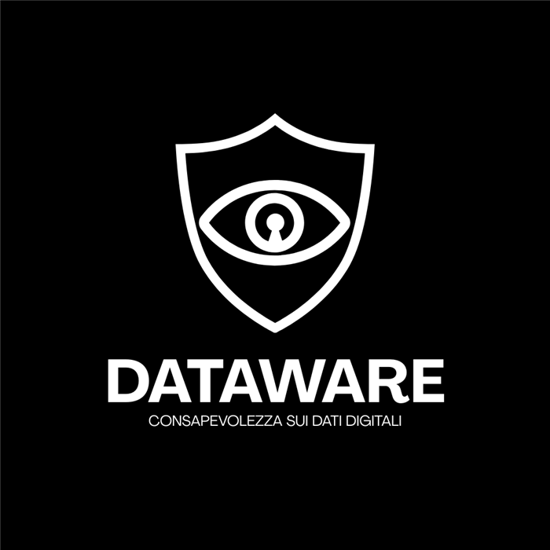

Software & AI Developer
Dall’idea
su carta
al sistema
che funziona.
Progetto e sviluppo software, automazioni e soluzioni con l'intelligenza artificiale. Mi impegno a capire bene il problema prima di scrivere codice, a spiegare le scelte in modo chiaro a chi userà il risultato e a curare ogni passaggio, dal primo schema al rilascio.
OpenAI Whisper RAG Machine Learning
n8n Integrazioni API Webhook Agenti AI
JavaScript Python PHP SQL
Figma UX research Prototipazione
Profilo
Un profilo ibrido, tra tecnologia e persone: mi interessano l'intelligenza artificiale, i dati e l'impatto che hanno su chi li usa.
Formazione Laurea triennale in ICT: ho imparato a progettare sistemi informatici partendo da chi li userà. Da qui è nata la tesi su Dataware.
In azienda Lavoro su processi reali, dal gestionale per i tecnici sul campo agli agenti che parlano con i software aziendali: parto da come si lavora oggi e cerco dove si può semplificare.
In evidenza · Tesi di laurea
Dataware
«Accetto i termini e le condizioni» è stata definita la bugia più grande di Internet. Dataware legge privacy policy e termini di servizio al posto tuo e ti spiega, criterio per criterio, cosa stai accettando.

Prova: scegli una piattaforma
-
01 · Il dataset
Sessanta piattaforme lette a mano
Non esisteva un dataset di privacy policy classificate per rischio, così l'ho costruito su dieci criteri tratti dal GDPR e dai termini di servizio.
-
02 · Machine learning
Da 0.48 a 0.64
Le policy usano tutte lo stesso linguaggio rassicurante, quindi le parole da sole dicono poco. I dieci criteri trasformati in segnali portano il modello a 0.64, mentre con i punteggi assegnati a mano si arriva a 0.95.
-
03 · Il prototipo RAG
Un modello che consulta le annotazioni
Il prototipo in n8n recupera le piattaforme già annotate più simili a quella nuova e motiva il punteggio su ogni criterio.
-
04 · La validazione
9 classi corrette su 10
Su dieci piattaforme mai viste lo scarto medio dall'annotazione manuale è di 1.7 punti, e ogni risultato si può verificare criterio per criterio.
Progetti
La collezione
Lavori in azienda, la tesi, i progetti universitari e quelli personali, una figurina ciascuno. Nei lavori per aziende, nomi di clienti e sistemi sono omessi.
Trascina le carte o usa le frecce, poi fai clic su quella in primo piano per aprirla.
Il metodo
-
01
Ascolto
Parto dalle persone che vivono il processo ogni giorno, per capire dove perdono tempo e cosa invece funziona già e va lasciato com'è.
-
02
Dati ed etica
Prima di muovere un dato mi chiedo da dove arriva, chi potrà vederlo e quanto a lungo resterà.
-
03
Carta e lavagna
Sul foglio metto in fila chi è coinvolto, le eccezioni e i casi limite. Scelgo lo strumento solo quando il problema è chiaro.
-
04
Flusso
Disegno il percorso dei dati per capire dove entrano, dove qualcosa può andare storto e cosa deve succedere in quel caso.
-
05
Costruzione
Scrivo il codice e i workflow, e uso l'intelligenza artificiale dove porta un vantaggio reale, controllando sempre che i risultati siano corretti.
-
06
Documentazione
Scrivo la relazione tecnica e, quando serve, una guida d'uso, così chi arriva dopo può capire il sistema e mantenerlo.
Contatti